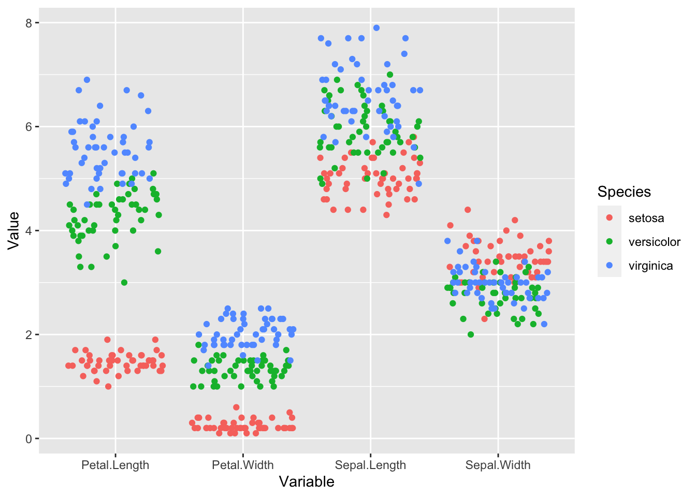
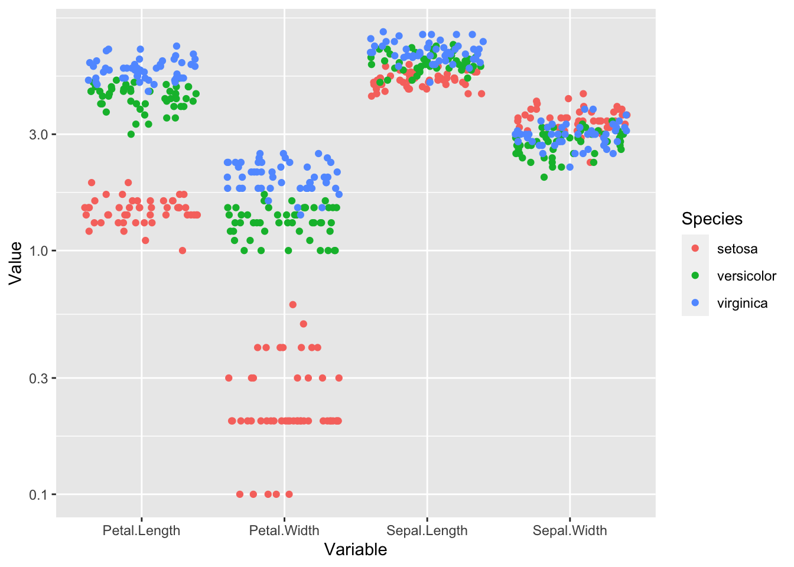
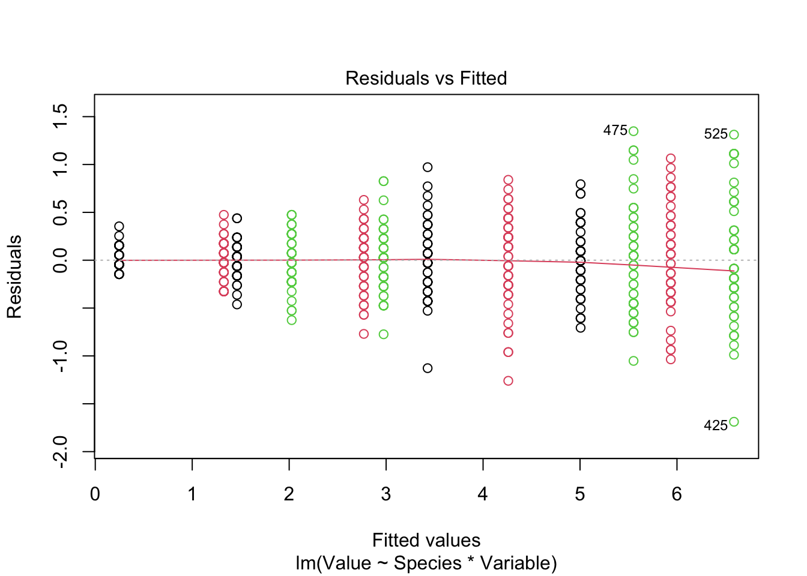
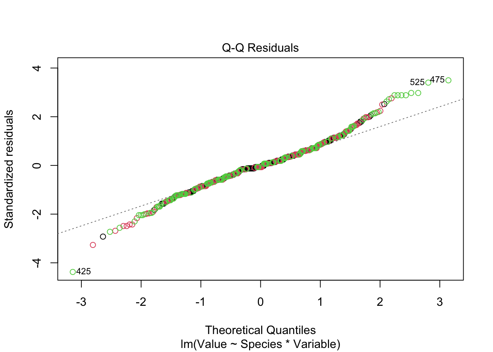

library('tidyverse')
library('lme4')The iris dataset
Init
Data preparation
iris_long <- iris |>
mutate(id = 1:nrow(iris)) |>
pivot_longer(cols = -c(Species, id),
names_to = 'Variable',
values_to = 'Value')Plots
iris_long |>
ggplot(aes(Variable, Value, color = Species)) +
geom_boxplot()
last_plot() + scale_y_log10() iris_long |>
ggplot(aes(Variable, Value, color = Species)) +
geom_jitter(height = 0)
last_plot() + scale_y_log10() 
Models
fitted_model <-
lm(Value ~ Species * Variable,
data = iris_long)
anova(fitted_model)Analysis of Variance Table
Response: Value
Df Sum Sq Mean Sq F value Pr(>F)
Species 2 309.61 154.80 1019.34 < 2.2e-16 ***
Variable 3 1656.26 552.09 3635.35 < 2.2e-16 ***
Species:Variable 6 282.47 47.08 309.99 < 2.2e-16 ***
Residuals 588 89.30 0.15
---
Signif. codes: 0 '***' 0.001 '**' 0.01 '*' 0.05 '.' 0.1 ' ' 1plot(fitted_model, col = iris_long$Species)

fitted_model <-
lm(log(Value) ~ Species * Variable,
data = iris_long)
anova(fitted_model)Analysis of Variance Table
Response: log(Value)
Df Sum Sq Mean Sq F value Pr(>F)
Species 2 90.843 45.421 1772.90 < 2.2e-16 ***
Variable 3 297.393 99.131 3869.31 < 2.2e-16 ***
Species:Variable 6 95.977 15.996 624.37 < 2.2e-16 ***
Residuals 588 15.064 0.026
---
Signif. codes: 0 '***' 0.001 '**' 0.01 '*' 0.05 '.' 0.1 ' ' 1plot(fitted_model, col = iris_long$Species)fitted_model <-
lmer(log(Value) ~ Species * Variable + (1 | id),
data = iris_long)
fitted_modelLinear mixed model fit by REML ['lmerMod']
Formula: log(Value) ~ Species * Variable + (1 | id)
Data: iris_long
REML criterion at convergence: -496.6563
Random effects:
Groups Name Std.Dev.
id (Intercept) 0.08565
Residual 0.13522
Number of obs: 600, groups: id, 150
Fixed Effects:
(Intercept) Speciesversicolor
0.3728 1.0702
Speciesvirginica VariablePetal.Width
1.3367 -1.8574
VariableSepal.Length VariableSepal.Width
1.2354 0.8531
Speciesversicolor:VariablePetal.Width Speciesvirginica:VariablePetal.Width
0.6854 0.8447
Speciesversicolor:VariableSepal.Length Speciesvirginica:VariableSepal.Length
-0.9011 -1.0642
Speciesversicolor:VariableSepal.Width Speciesvirginica:VariableSepal.Width
-1.2837 -1.4783 Conclusion
- In general, I like the log scale modeling - however there is a problem with the model on log scale
- Effects can be given as fold-changes - this seems to make sense to me
- Species “setosa” is not fitted adequately on log scale - probably measurement error is not adequately modeled on log scale - higher variance of error on log scale
- Dependence on individual level is not considered in the plain linear model
- Linear mixed model should be considered!!!